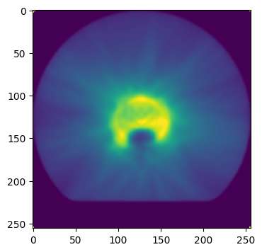
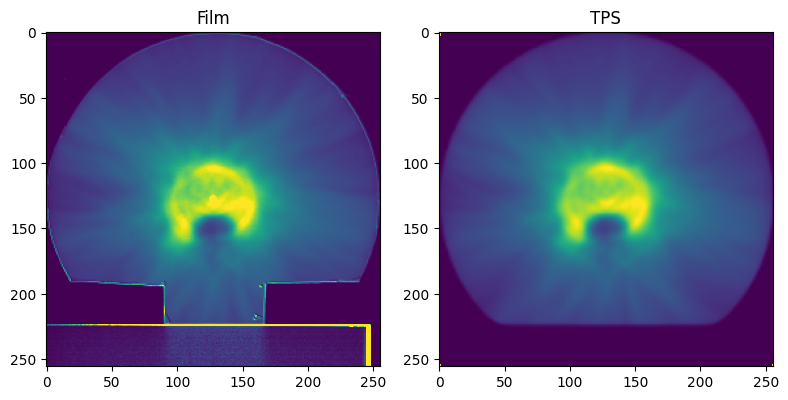
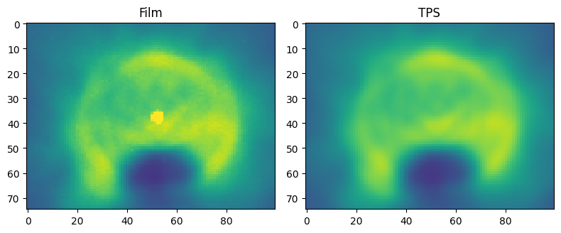

DICOM example#
If the dose distribution is generated with a treatment planning system (TPS), export only a dose plane, with a reference point (usually the isocenter on the center of the dose plane image).
In this guide we are going to use the file ‘RD_20x20cm2_256x256pix.dcm’. It is inside the folder /Dosepy/docs/Jupyter. The DICOM file was created with Eclipse (version 15.1), exporting a region of interest of 20 cm x 20 cm, centered on the isocenter and with 256 x 256 pixels.
Let’s import Dosepy and numpy
from Dosepy.image import load
import numpy as np
To read a DICOM file, we call the load() function:
dicom_path = "/home/luis/Documentos/RD_20x20cm2_256x256pix.dcm"
D_tps = load(dicom_path)
#---------------------------------------------
# Code to plot the dose distribution
import matplotlib.pyplot as plt
fig, axes = plt.subplots(1, 1, figsize=(8, 4))
axes.imshow(D_tps.array, cmap='viridis', vmin=0, vmax = 1.15 * np.percentile(D_tps.array, 98))
plt.show()
#---------------------------------------------

Open the film dose distribution
film_array = np.genfromtxt('/home/luis/Documentos/RD_20x20_300dpi.csv', delimiter=",", comments="#")
D_film = load(film_array, dpi=300)
print(f"D_tps shape: {D_tps.shape}")
print(f"D_film shape: {D_film.shape}")
D_tps shape: (256, 256)
D_film shape: (2362, 2362)
D_tps and D_film have different spatial resolution (dpi). In order to compute gamma, we need to equate the images.
from Dosepy.image import equate_images
D_tps, D_film = equate_images(D_tps, D_film)
print(f"D_tps shape: {D_tps.shape}")
print(f"D_film shape: {D_film.shape}")
D_tps shape: (256, 256)
D_film shape: (256, 256)
#---------------------------------------------
# Plot
import matplotlib.pyplot as plt
fig, axes = plt.subplots(1, 2, figsize=(8, 4))
ax = axes.ravel()
ax[0].imshow(D_film.array, cmap='viridis', vmin=0, vmax = 1.15 * np.percentile(D_tps.array, 98))
ax[0].set_title('Film')
ax[1].imshow(D_tps.array, cmap='viridis', vmin=0, vmax = 1.15 * np.percentile(D_tps.array, 98))
ax[1].set_title('TPS')
fig.tight_layout()
plt.show()
#---------------------------------------------

Make a ROI selection
D_tps = load(D_tps.array[90:165, 75:175], dpi=D_tps.dpi)
D_film = load(D_film.array[90:165, 75:175], dpi=D_film.dpi)
#---------------------------------------------
# Plot
import matplotlib.pyplot as plt
fig, axes = plt.subplots(1, 2, figsize=(8, 4))
ax = axes.ravel()
ax[0].imshow(D_film.array, cmap='viridis', vmin=0, vmax = 1.15 * np.percentile(D_tps.array, 98))
ax[0].set_title('Film')
ax[1].imshow(D_tps.array, cmap='viridis', vmin=0, vmax = 1.15 * np.percentile(D_tps.array, 98))
ax[1].set_title('TPS')
fig.tight_layout()
plt.show()
#---------------------------------------------

Compute gamma
g, pass_rate = D_tps.gamma2D(D_film, 3, 2, dose_threshold = 10, mask_radius = 10)
print(f'Pass rate: {pass_rate:.1f} %')
Pass rate: 98.4 %
fig, axe = plt.subplots()
g_im = axe.imshow(g, vmax=1.5)
fig.colorbar(g_im, ax=axe, label='Gamma')
<matplotlib.colorbar.Colorbar at 0x733d054b7ac0>